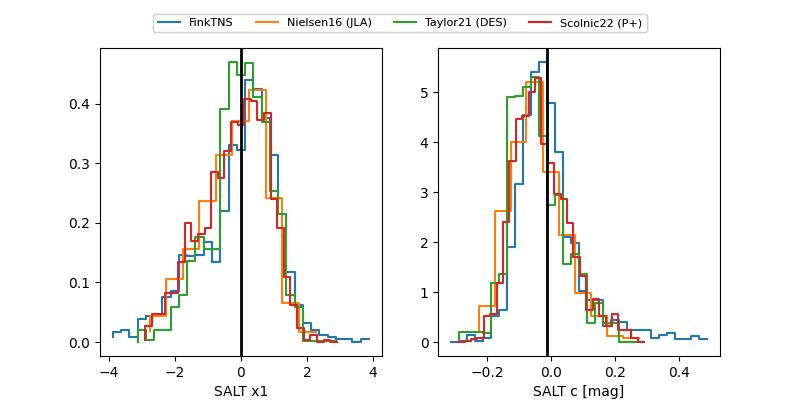

FINK: ZTF25abpfaae
Lasair: ZTF25abpfaae
ALeRCE: ZTF25abpfaae
TNS: 2025xca
YSE: 2025xca
ZTF25abpfaae (ztf,fink)
2025xca (tns,yse)
equatorial (ra, dec) = (144.6133,+39.76966)
galactic (l, b) = (182.5677,+48.35133)

last ztfr=18.48
14 ztfr detections